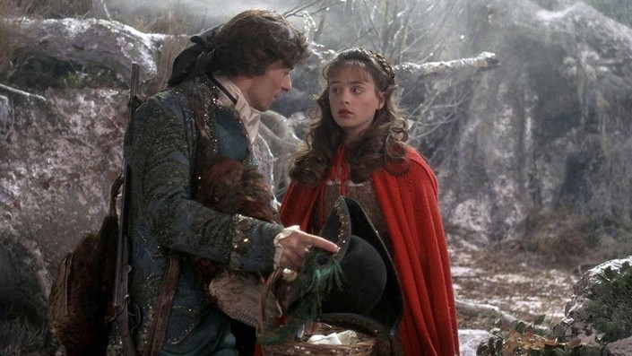
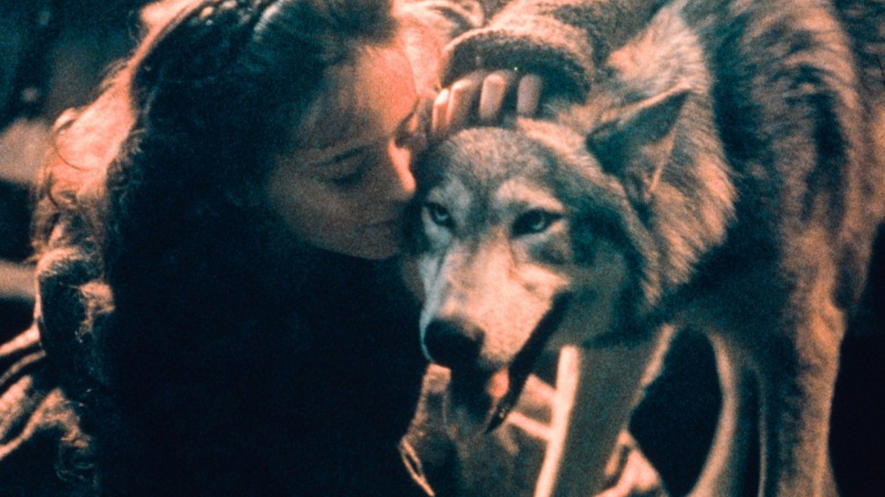

By Angela Carter
Summary
“The girl burst out laughing; she knew she was nobody's meat.”
In Angela Carter’s The Company of Wolves, a retelling of the Little Red Riding Hood tale, a young girl travels through a dangerous forest inhabited by men who transform into wolves, creatures driven by predatory desire and violence. After a wolf kills her grandmother, the girl confronts him alone, yet instead of succumbing to fear, she meets his aggression with confidence and curiosity. Recognizing the power his desire gives her, she chooses to engage him on her own terms and ultimately tames him by asserting her sexuality and control. The story transforms a traditional cautionary tale into one of empowerment, depicting a heroine who escapes danger not through innocence or obedience but through self-possession, agency, and a fearless understanding of her own strength.

What is the scope of patriarchy and oppresion?
How does if affect the female protagonist?
In this story, the social construct of patriarchy is largely absent or irrelevant in comparison to the more immediate and primal danger posed to women. Instead of facing systemic or legal oppression, the protagonist inhabits a world where men literally transform into wolves and hunt women who enter their territory, which turns male dominance into a physical threat rather than a social one. Her situation is defined by the fact that being targeted by a man means certain death, a reality underscored when the wolf kills her grandmother without hesitation. The wolf’s playful cruelty toward her, followed by the approval of his pack, highlights a metaphor for the animalistic impulses of men and the increased danger that arises when such behavior is encouraged or celebrated by the larger group.

How does the female protagonist free herself?
How does this change her for the better moving forward?
In The Company of Wolves, the protagonist finds her escape by taking control of the situation rather than running from it. Faced with a predator who intends to dominate her, she recognizes the power his desire grants her and chooses to use her own sexuality as a means of reversing their dynamic. By meeting his advances with confidence rather than fear, she turns the encounter into one in which she holds the authority, and her assertiveness effectively domesticates the wolf who once threatened her life. This transformation marks a personal shift as well, because she discovers her ability to command agency in a world that seeks to treat her as prey. Her escape is not only physical but also symbolic, since it reflects her growth into a figure who understands her own strength and refuses to be controlled by the forces that endanger her.